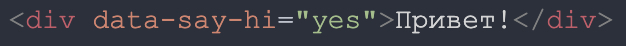
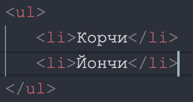
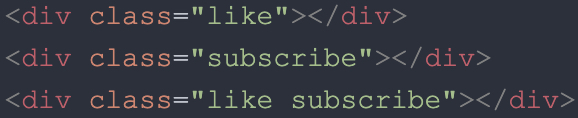
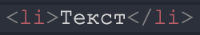
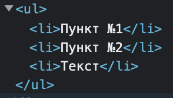

Домашка №24
Урок №8. Функции в JavaScript
Задача №1. Кто попадёт в консоль первым Вася или Коля?
Первым в консоль попадёт "Коля!"" т.к. нулевая задержка не даёт гарантии, что обработчик выполнится через ноль миллисекунд. Вызов setTimeout с аргументом 0 (ноль) не завершится за указанное время. Выполнение зависит от количества ожидающих задач в очереди.
Задача №2. Верно ли вызвана функция?
Функция showMessage вызвана верно т.к. записанная таким образом функция может быть вызвана в любом месте программы в отличии от функционального выражения.
Задача №3. Верно ли вызвана функция?
Функция showMessage вызвана неверно т.к. функция записана в виде функционального выражения и может быть вызвана только после этого выражения.
Задача №4. Как решть проблему?
Нужно создать глобальную пременную showMessage и присвоить ей функцию т.е. создать функциональное выражение.
Урок №12. Массивы в JavaScript
Задача №1. Каое число (длинну) мы получим?
Получим число (длинну) четыре т.к. в пременной newArr содержится копия массива arr, все изменения ктороые будут происходить с копией перенесутся и на объект arr.
Задача №2
cоздайте массив users с элементами "Ваня" и "Иштван"
let users = ["Ваня", "Иштван"];
добавте "Оля" в конец
users.push("Оля");
замените значение "Иштван" на "Петя", код для поиска должен работать с любой длинной
let index = users.indexOf('Иштван');
console.log(index);
if (index >= 0) {
users.splice(index, 1, "Петя");
console.log(users);
} else {
console.log("Элемент не найден");
}
удалите первый элемент массива и покажите его
let removed = users.splice(1, 1);
console.log(removed);
вставьте "Маша" и "Паша" в начало массива
users.unshift("Маша", "Паша");
console.log(users);
Задача №3. Удалить элемент "Иштван" и вернуть его в переменную
let arr = ["Иштван", "Ваня", "Максим", "Оля", "Петя"];
let element = arr.indexOf('Иштван');
let removedElement;
console.log(element);
if (element >= 0) {
removedElement = arr.splice(element, 1);
console.log(`Удалённый элемент: ${removedElement}`);
} else {
console.log("Элемент не найден");
}
Задача №4. Сделать из строки массив
let str = "Ваня,Иштван,Оля,Давид";
let strArr = str.split(',');
console.log(strArr);
Задача №5. Чему равен previosValue в начале работы метода?
previosValue в начале работы метода будет равен 9 но сам метод не сработает т.к. он должен возвращать значение (return) а сам previosValue должен хранить результат каких то промежуточных вычислений
Урок №13. Браузерное окружение. Работа с DOM.
- Пункт №1
- Пункт №2
Задача №1. Получить в переменную элемент с атрибутом data-say-hi и прочитать значение этого атрибута

let lessonText = document.querySelector('[data-say-hi]');
let dataValue = lessonText.getAttribute('data-say-hi');
console.log(dataValue);
Задача №2 Получить в переменную элемент с текстом Йончи

let textElementContent;
const textElement = document.querySelectorAll('li');
for (const item of textElement) {
if (item.textContent == "Йончи") {
textElementContent = item;
}
}
console.log(textElementContent.textContent);
Задача №3 Получить в переменную коллекцию элементов с классом like

let elems = document.querySelectorAll('.like');
for (let item of elems) {
console.log(item);
}
Задача №4 Куда добавится  ?
Если применить querySelector или обратиться к ul как к list[0] то Текст добавится в конце объекта list
Урок №14. Размеры, прокрутка, координаты
Задача №1 Узнать ширину полосы прокрутки
const mainElement = document.documentElement;
const mainElementWidth = mainElement.clientWidth;
console.log(`Доступная ширина окна: ${mainElementWidth}px`);
const windowWidth = window.innerWidth;
console.log(`Ширина окна вместе с полосой прокрутки: ${windowWidth}px`);
let lineScrollWidth = windowWidth - mainElementWidth;
console.log(`Ширина полосы прокрутки: ${lineScrollWidth}px`);
Задача №2. Заставьте браузер прокрутиться на 100px сверху спустя секунду после открытия страницы
function setScrollTo() {
window.scrollTo(0, 100);
const windowScrollTop = window.pageYOffset;
console.log(`Скрол на ${windowScrollTop}px`);
}
setTimeout(setScrollTo, 1000);
Задача №3. Получите координаты любых трёх элементов на странице
const title = document.querySelector('h1');
const getTitleCoord = title.getBoundingClientRect();
console.log(getTitleCoord);
const displayNone = document.querySelector('.display-none');
const getDisplayNoneCoord = displayNone.getBoundingClientRect();
console.log(getDisplayNoneCoord);
const image2 = document.querySelector('.image2');
const getImage2TopCoord = image2.getBoundingClientRect().top;
const getImage2TopDocumentCoord = getImage2TopCoord + window.pageYOffset;
console.log(getImage2TopDocumentCoord);